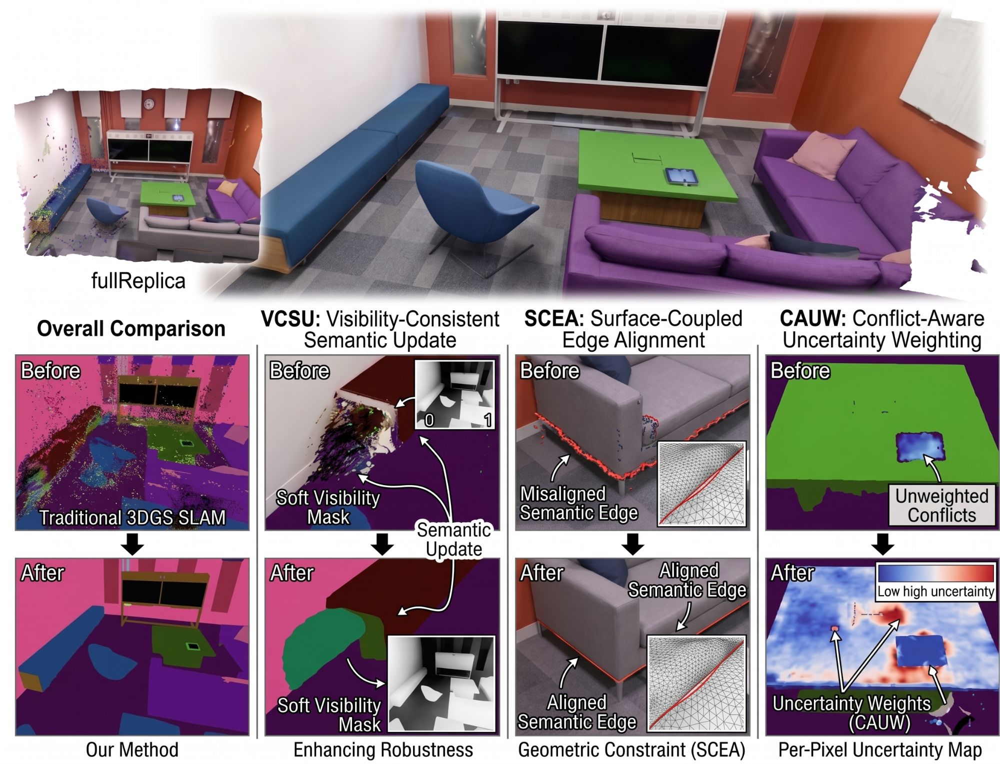
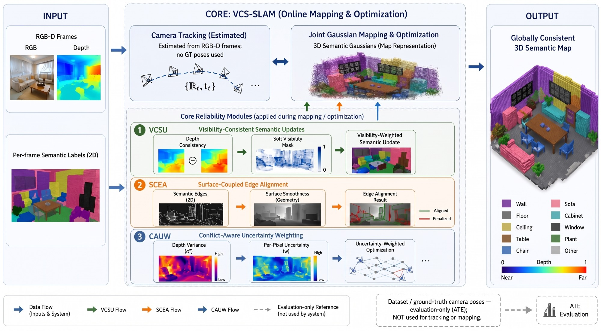
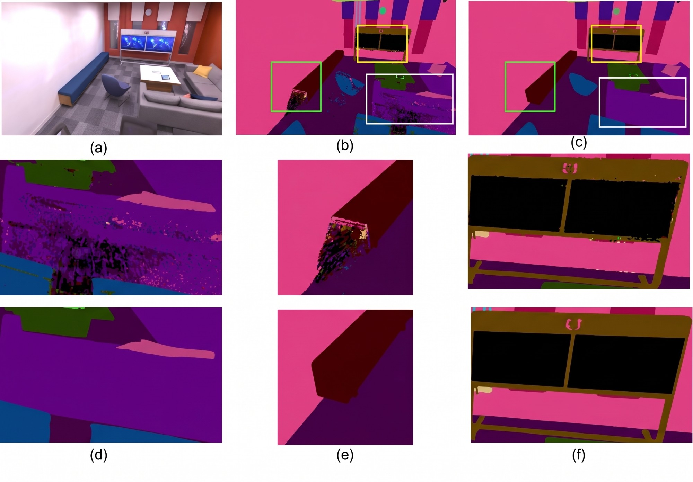

Abstract
Semantic 3D Gaussian SLAM commonly fuses 2D semantic priors into a persistent 3D map using uniform optimization weights. However, such priors are not equally reliable in online mapping: occlusions, unsupported semantic boundaries, and ambiguous ray geometry introduce persistent semantic artifacts into the global Gaussian map. We propose VCS-SLAM, a geometry-validated semantic evidence fusion framework for RGB-D 3D Gaussian SLAM. Instead of treating all semantic observations as uniformly valid supervision, VCS-SLAM evaluates their geometric reliability through visibility consistency, surface-supported boundary evidence, and ray-level conflict uncertainty. The resulting reliability-aware objective suppresses occluded semantic updates, reduces unsupported semantic bleeding, and delays premature label assignment in ambiguous regions. Experiments on Replica show improved semantic consistency, boundary preservation, and reconstruction quality, while ScanNet results confirm competitive tracking under real RGB-D input. Under structured corruption of the 2D priors, VCS-SLAM degrades at little more than half the rate of a comparable semantic Gaussian SLAM baseline and outperforms naive gating, smoothness, and entropy-weighting variants of its own modules, indicating that the gains follow from the specific formulation rather than from reweighting alone.
Method

Every Gaussian carries a C-dimensional semantic logit vector that is alpha-composited into a semantic map Sp and supervised with per-pixel cross-entropy against the 2D label yp. Instead of trusting every label equally, VCS-SLAM scores each pixel with a geometric reliability ρp = Mvis(p) · Cp derived from the rendered geometry, and couples semantic boundaries to surface evidence.
Visibility-consistent semantic updates
Where the rendered depth disagrees with the sensor depth, the pixel is likely occluded or poorly reconstructed, so its label is down-weighted by a soft visibility mask.
Surface-coupled edge alignment
A soft penalty discourages semantic edges where the rendered surface has no depth edge, reducing semantic bleeding at weakly supported boundaries.
Conflict-aware uncertainty weighting
High depth variance along a ray signals competing or unconverged geometry; those pixels receive smaller semantic gradients, delaying premature label assignment.
The reliability-aware semantic objective enters the joint mapping loss λD LD + λC LC + λS Lsem, so 2D priors are assimilated according to their geometric reliability rather than treated as uniformly valid.
Results
Semantic segmentation on Replica, mIoU (%)
| Method | Avg. | Room-0 | Room-1 | Room-2 | Office-0 |
|---|---|---|---|---|---|
| SNI-SLAM | 87.41 | 88.42 | 87.43 | 86.16 | 87.63 |
| SGS-SLAM | 92.72 | 92.95 | 92.91 | 92.10 | 92.90 |
| SemGauss-SLAM | 96.34 | 96.30 | 95.82 | 96.51 | 96.72 |
| Hier-SLAM | 95.58 | 95.25 | 95.81 | 95.73 | 95.52 |
| VCS-SLAM (Ours) | 95.87 | 96.44 | 95.78 | 95.63 | 95.63 |
Per-frame visible-class protocol of SGS-SLAM. SemGauss-SLAM leverages pre-trained foundation-model semantic supervision.
Mechanism analysis on Replica
| Module | Targeted metric | SGS-SLAM | VCS-SLAM | Gain |
|---|---|---|---|---|
| VCSU | mIoU on depth-inconsistent pixels (%) | 86.43 | 91.05 | +4.62 |
| SCEA | Boundary F1 (3 px) | 0.82 | 0.98 | +0.16 |
| CAUW | Error-detection AUROC | 0.73 | 0.85 | +0.12 |
Qualitative ablation

Robustness to unreliable semantic priors
Dataset labels are already correct, so we corrupt the 2D priors before fusion to reproduce common failure modes of 2D segmentation. Under all three structured corruptions, VCS-SLAM degrades at little more than half the rate of SGS-SLAM. Under uniform random reassignment, used as a control, the trend reverses: the reliability gates measure geometric support, not semantic correctness.
| Corruption (mild / moderate / severe) | Method | Clean | Mild | Mod. | Severe | Δ ↓ |
|---|---|---|---|---|---|---|
| Boundary misalignment (k = 1 / 3 / 5 px) | SGS-SLAM | 92.72 | 90.17 | 86.49 | 82.37 | 10.35 |
| VCS-SLAM | 95.87 | 93.65 | 91.33 | 89.92 | 5.95 | |
| Class confusion (p = 5 / 10 / 20%) | SGS-SLAM | 92.72 | 89.29 | 85.67 | 80.21 | 12.51 |
| VCS-SLAM | 95.87 | 93.07 | 90.77 | 88.91 | 6.96 | |
| Missed detections (q = 10 / 25 / 50%) | SGS-SLAM | 92.72 | 91.03 | 87.52 | 83.61 | 9.11 |
| VCS-SLAM | 95.87 | 94.32 | 92.87 | 90.43 | 5.44 | |
| Uniform, control (r = 5 / 10 / 20%) | SGS-SLAM | 92.72 | 90.37 | 87.95 | 85.38 | 7.34 |
| VCS-SLAM | 95.87 | 92.36 | 88.87 | 87.62 | 8.25 |
mIoU (%) averaged over Room-0, Room-1, Room-2 and Office-0; Δ = clean − severe.
BibTeX
@article{jha2026vcsslam,
title = {{VCS-SLAM}: Visibility-Consistent Semantic Fusion for {3D} {Gaussian} {SLAM}},
author = {Jha, Raman and Yuan, Shuaihang and Fang, Yi},
journal = {IEEE Robotics and Automation Letters},
year = {2026},
eprint = {2606.29494},
archivePrefix = {arXiv}
}
Acknowledgements
VCS-SLAM builds on SGS-SLAM and SplaTAM; we thank their authors for releasing their code. Experiments use the Replica and ScanNet datasets.